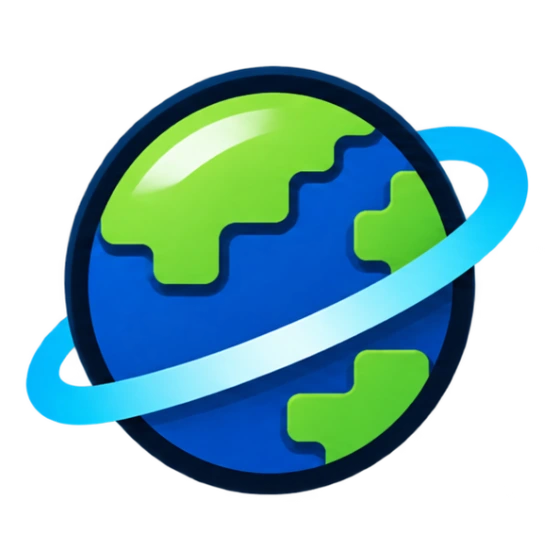

Minecraft Java Edition
Discover your next Minecraft server.
Mineroam is an in-game server list for independently hosted Minecraft servers. Join the lobby, find a server and play.
Server addressplay.mineroam.com
Java Edition · 1.20.6 or newer
Join the lobby
Open Minecraft Multiplayer, add play.mineroam.com and connect. Open the compass to browse servers and vote.
Add your server
Install Mineroam Link on Paper or Velocity and register your server in game.
/mineroam register <name> <address[:port]>